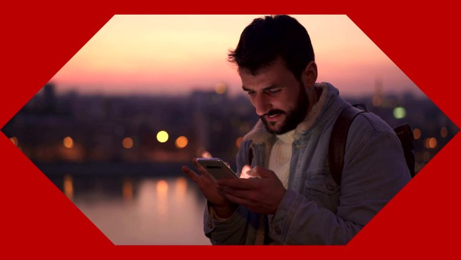

Sennheiser
From Robin / for Earth AI
A few projects from me and the team at MONO, selected for Earth AI.
Explore selected work ↓A note from Robin
I'm Robin. I lead MONO, a small creative team in Sydney. We work with Main Sequence and a number of deep tech companies, helping them explain their ideas and document their work.
Earth AI caught my attention because there's so much to show, from the technology guiding your search to the people out in the field testing it. I'd love to learn more about what you're doing and how you're sharing that with the world.
I've included a few films and some motion work below to give you a feel for what we do. If any of it feels useful for Earth AI, it'd be great to have a chat.
Robin01 — BMRG
The Burnett Mary Regional Group (BMRG) commissioned us to document conservation work on Queensland's Mary River. We filmed everything from the drone footage to the interviews, bringing together the perspectives of scientists, Traditional Owners and landholders. The focus was the human story: the people working to protect the river and why it matters to them.
Conservation film
02 — Deep tech
Here are three projects from our work with Main Sequence's portfolio companies: Advanced Navigation, Morse Micro and NewEra. This is the kind of work I love — getting close to a technical subject and helping people connect with the story behind it.
Company film
Company film
Company film
03 — Main Sequence
Our work with Main Sequence also brings interviews and motion graphics together. I like the way they complement each other: the interview gives you a person's perspective, while motion helps make the ideas easier to follow.
Interview
Motion graphics
04 — Traditional storytelling
I have 20 years of experience working in advertising, across editing, motion design and production. I've now built a small team called MONO, with a focus on deep tech. Together, we find the story, make complex ideas clear and get the details right.

05 — Working with Earth AI
You'd work directly with our small team at MONO, with me involved throughout. We'd work out together where film, interviews or motion graphics could be useful.
A conversation about what you're working on, who you're trying to reach and where you could use some support.
Your team's knowledge of the science, alongside our experience in storytelling. We'd shape the approach together and check the details as we go.
That might be a film, an interview or a piece of animation. We could start small and see how we work together.
06 — A chat with Robin
If any of this feels relevant, let's have a chat. I'd love to learn more about Earth AI, what you're working towards and where I could help.
Chat with Robin ↗ Robin Sung · Founder, MONO